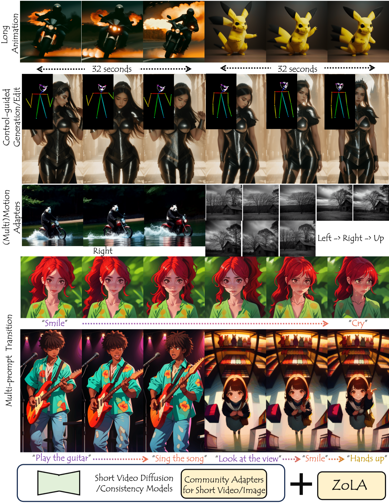

ZoLA: Zero-Shot Creative Long Animation Generation with Short Video Model
Click to Play the Long Animations (8 or 32 seconds)!
Click to Play the Long Animations (8 or 32 seconds)!
Methodology
Although video generation has made great progress in capacity and controllability and is gaining increasing attention, currently available video generation models still make minimal progress in the video length they can generate. Due to the lack of well-annotated long video data, high training/inference cost, and flaws in the model designs, current video generation models can only generate videos of $2 \sim 4$ seconds, greatly limiting their applications and the creativity of users. We present ZoLA, a zero-shot method for creative long animation generation with short video diffusion models and even with short video consistency models~(a new family of generative models known for the fast generation with top-performing quality). In addition to the extension for long animation generation~(dozens of seconds), ZoLA as a zero-shot method, can be easily combined with existing community adapters~(developed only for image or short video models) for more innovative generation results, including control-guided animation generation/editing, motion customization/alternation, and multi-prompt conditioned animation generation, etc. And, importantly, all of these can be done with commonly affordable GPU~(12 GB for 32-second animations) and inference time~(90 seconds for denoising 32-second animations with consistency models). Experiments validate the effectiveness of ZoLA, bringing great potential for creative long animation generation.
Comparisons
Here we demonstrate long animations generated by different methods.
Click to Play the Long Animations.
Gallery Ⅰ: Standard Generation
Here we demonstrate long animations generated by ZoLA.
Click to Play the Long Animations.
Gallery Ⅱ: Controllable Generation
Here we demonstrate long animations generated by ZoLA with ControlNet.
Click to Play the Long Animations.
Gallery Ⅲ: Multi-Prompt Conditions
Here we demonstrate long animations generated by ZoLA conditioned with multi-prompts.
Click to Play the Long Animations.
Prompt Change of Video Ⅰ: Smile ➜ Cry
Prompt Change of Video Ⅱ: Camera Left ➜ Camera Right ➜ Camera Up
Prompt Change of Video Ⅲ: Play the Guitar ➜ Sing the Song
Prompt Change of Video Ⅳ: Look at the view ➜ Smile ➜ Hands Up
Project page template is borrowed from DreamBooth.